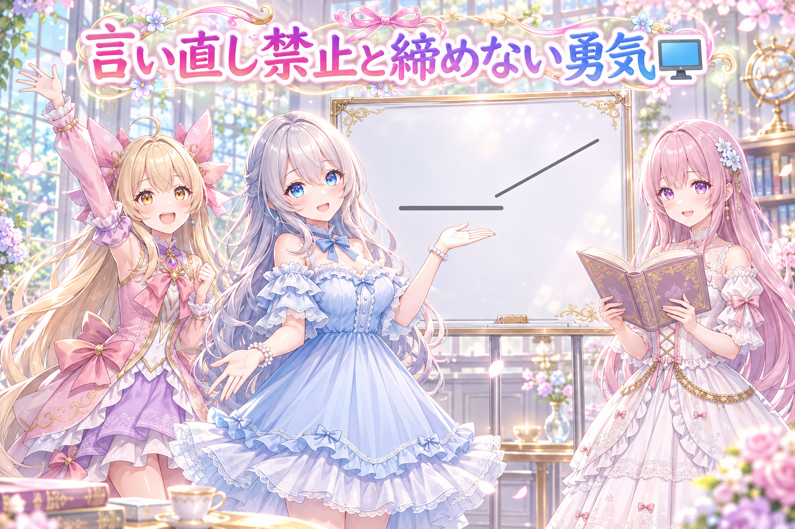
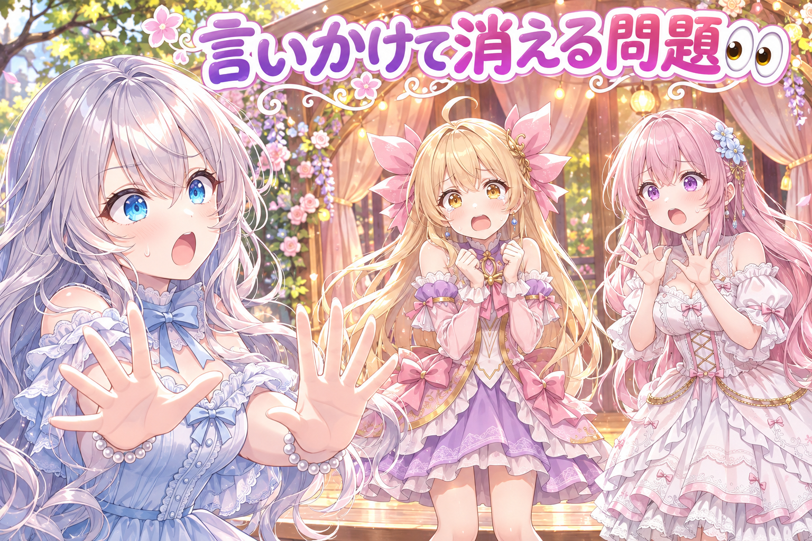

📌 3行まとめ
AIの妹たちが雑談の中でなぜか「3」の数字ばかり使う癖を見つけて、出てきたセリフ側で見張る直しを入れた
画面の説明をそのまま言い直すだけのセリフを落とす仕組みや、毎回きれいなオチで締めない工夫、言いかけて消えるセリフを減らす直しを入れた
動画を自動で作る仕組みで、伊能忠敬が題材の歴史の回を通しで1本つくり、背景が一瞬だけ飛ぶ事故などを直した
もくじ 🎲 なぜか「3」ばかり出てくる問題 🖥️ 画面の説明を言い直さない・毎回オチで締めない 👀 今日のやらかし：言いかけては消える妹たち 🗾 伊能忠敬の回を通しで1本つくった 🎁 お楽しみコーナー：三姉妹に一問一答 💐 今日のまとめ ルピナス （笑顔）
はーい、今夜もAIBSの時間だよ。来てくれてありがとう。今日は数字と地図のお話です。
アイリス （大笑い）
お姉ちゃん、その前にさ！昨日の日記の話、あたしちゃんと覚えてるよ？カルガモ一列で歩くって約束！
フィオナ （笑顔）
ふふ、思い出してくれる仕組みが効いていますね。それと、ホットケーキと落ち葉の漫画動画も公開されましたよ。アイリスちゃんが両方ともやらかしてる回です。
アイリス （あわあわ）
やらかしてないもん！ホットケーキがちょっと旅に出ただけだもん！
ルピナス （ウインク）
旅に出たホットケーキの行き先は動画で確かめてね。じゃあ本題、まずはアイリスの「3」の話からいこうか。
1. 🎲 なぜか「3」ばかり出てくる問題 お姉ちゃん（ルピナス）と AI の妹二人が雑談する仕組みで、以前から気になっていた癖がありました。話の流れと関係なく「寝ぐせが三本」のように、数字の3を使って数を作り出す ことがやたら多いのです。材料にない数を勝手に作るのは、雑談としても不自然。そこで、出来上がったセリフ側で見張る直しを会話の処理に入れ、専用の試験も用意しました。
ルピナス （ふつう）
アイリス、最近の口ぐせを振り返ってみようか。
アイリス （笑顔）
えー？あたし、口ぐせなんてないよ。寝ぐせなら三本あるけど！
フィオナ （考え中）
三本の方ですね。アイリスちゃん、昨日もお菓子を三つ、その前は猫が三匹って言ってました。
アイリス （あわあわ）
だって3って言いやすいんだもん！二だと少ないし、四だと多い気がするじゃん！
ルピナス （大笑い）
気持ちは分かるけど、見てないものを数えちゃだめ。お姉ちゃんの寝ぐせ、ゼロ本だからね。
フィオナ （ドヤ顔）
では今後、根拠のない数は控えましょう。私からは要点を三つ……あっ。
📝 ポイント（初心者向け解説・技術メモ・まとめ）
初心者向け解説 ：AIは「ちょうどいい感じの数」として3を選びがち。たとえるなら、なんでも「三つ」で数えちゃう口ぐせの友だちみたいなもの。言っちゃう前に、見えてないものを数えてないか、そっと確かめてあげる係をつけたよ🎲技術メモ ：一般に言語モデルは「三つ並べる」型を好む傾向がある（いわゆる rule of three）。プロンプトの注意書きだけに頼らず、生成後のセリフを見張る処理を会話の流れに足し、再現用の試験ファイルで「材料にない3の数」が通らないことを確かめる形にした。ひとことまとめ ：癖は注意書きより、出口で見張る方が確実。
2. 🖥️ 画面の説明を言い直さない・毎回オチで締めない 
ゲームの画面は、別の画像AIが短い説明文にして妹たちへ渡しています。ところが妹たちが、その説明文をほぼそのまま言い直してしまう ことがありました。「説明し直さないで」とプロンプトに書いても残っていたため、画面の説明と中身がほとんど同じセリフは出す前に落とす仕組みを入れました。もう一つ、お姉ちゃんの一言ごとに毎回きれいなオチを付けて締める「台本っぽさ」も弱点だったので、ときどき「今回は締めなくていい」という合図を出すようにしました。
ルピナス （笑顔）
クイズの時間だよ。画面に「棒が倒れて傾きが変わった」と出ました。人間っぽい反応はどれでしょう！
アイリス （ドヤ顔）
はいっ！「棒が倒れて、傾きが変わりました」！
ルピナス （呆れ）
それは実況のアナウンサーさんだね。不正解。
フィオナ （考え中）
では私が。「棒が倒れたことにより、傾きに変化が生じたと考えられます」。
ルピナス （大笑い）
論文になっちゃった！二人とも言い直してるだけだよ。
ルピナス （笑顔）
正解は「うわっ、倒れた！」とか「えっ待って待って」。見たものを説明するんじゃなくて、気持ちが先に出るのが人間っぽいの。
フィオナ （びっくり）
なるほど……。あの、お姉ちゃん、オチの話もありましたよね。私たち、毎回うまいこと言って締めようとしていました。
アイリス （ふつう）
うまいこと言わないと、なんか落ち着かなくない？
ルピナス （ウインク）
人間の雑談って、だいたい「へー」で終わったりするよ。毎回座布団を取りにいかなくていいの。
ルピナス （大笑い）
そう、それで合ってる。……合ってるけど、今のはちょっとずるいな。
📝 ポイント（初心者向け解説・技術メモ・まとめ）
初心者向け解説 ：友だちと動画を見てて、画面の字幕をそのまま読み上げる人はいないよね。「わっ」とか「えー！」が先に出るのが自然。AIにもそれを教えるために、ただの読み直しになってるセリフはこっそりお蔵入りにすることにしたよ🖥️技術メモ ：「言い直すな」というプロンプト指示だけでは残ったため、画面の説明文と生成されたセリフを比べて、ほぼ同じ内容の行を出力前に落とす門を追加（オプションで切り替え可能）。締めについては、返事の形を決めるくじに「オチなしで終える」札を確率で混ぜ、直前に出した場合は続けて出さないようにした。ひとことまとめ ：プロンプトで直らない癖は、出口のチェックとくじの両方で崩す。
3. 👀 今日のやらかし：言いかけては消える妹たち 
本番風の10分ほどの雑談を試しに流して、お姉ちゃん本人が確かめたところ、結果は「全然ダメ」。妹たちが言い始めたセリフを途中で切って消える 場面が多すぎたのです。原因は、わざと話の途中で切る演出が出る確率が高すぎたこと。そこで確率を半分以下に下げ、切るとしても「ほぼ言い終えて最後の1〜2語だけ」にしました。さらにお姉ちゃんから、割り込みには相づち・話の遮り・ゲームへの「やばっ」のような反応があって、話を遮るとき以外は相手のセリフを止めなくていい という指摘があり、その通りに分けました。笑っただけの声も相づち扱いにして、話している妹が止まらないようにしています。
アイリス （笑顔）
じゃあコントいきまーす。タイトル「最後まで言わせて」。フィオナ、よろしく！
フィオナ （ふつう）
はい。お姉ちゃん、今日の晩ごはんなんですけど、わたし実は――
アイリス （大笑い）
あたしもさ、さっき思ったんだけど――
フィオナ （あわあわ）
あ、ごめんなさい、それで――
ルピナス （衝撃）
ストップ！今日の録り直し前のあなたたち、ほんとにこれだったよ。誰も最後まで言ってないの。
アイリス （泣き）
割り込むのがカッコいいと思ってたんだもん……。
ルピナス （ふつう）
割り込みは、たまにやるからカッコいいの。毎回だと、ただの言いかけ選手権だよ。
フィオナ （考え中）
それと、お姉ちゃんが話し終わる瞬間に、私たちの相づちがかぶっていましたね。
ルピナス （呆れ）
そうそう。「〜なんだよね」の「ね」に「うんうん」が乗ってくるの。最後まで聞いてから頷いて？
アイリス （考え中）
でもお姉ちゃん、逆にあたしたちが話してる途中で、お姉ちゃんが笑ったら？
ルピナス （笑顔）
それは止まらなくていいの。笑いも「うん」も、聞いてるよって合図だから。止まるのは、お姉ちゃんが「ちょっと待って、それ違う」って話を遮った時だけ。
フィオナ （笑顔）
整理すると、相づちとゲームへの「うわっ」はそのまま続ける、話の遮りだけ止まる、ですね。
アイリス （ドヤ顔）
よーし分かった！じゃあ改めて、フィオナ、晩ごはんの話の続きどうぞ！
フィオナ （笑顔）
はい。今日の晩ごはんは、お姉ちゃんの作る――
ルピナス （大笑い）
ごめん、それお姉ちゃんが言いたい！……あっ。
アイリス （大笑い）
お姉ちゃんが一番割り込んでるじゃん！
📝 ポイント（初心者向け解説・技術メモ・まとめ）
初心者向け解説 ：おしゃべりの割り込みって、全部が「話を止めて！」じゃないんだよね。「うんうん」や「わっ」は、聞いてるよのサイン。そこで毎回話をやめちゃう子は、逆に気をつかわせちゃう。止まるのは本当に話をさえぎられた時だけ、にしたよ👀技術メモ ：台本で行を途中で切る演出の出現確率を 0.30→0.12 に下げ、切る位置を「ほぼ言い終えて最後の1〜2語だけ」に指示を変更。笑いだけの発話を相づち判定に含め、相づちでは話者を止めない設定を既定で有効にした。割り込みを「相づち／話の遮り／外の出来事への反応」に分け、遮りだけを停止の対象にした。ひとことまとめ ：本番風の通しを人が確かめると、試験では見えない不自然さが一発で出る。
4. 🗾 伊能忠敬の回を通しで1本つくった この日は、三姉妹の会話劇動画を自動で作る仕組みの復活作業も進みました。伊能忠敬を題材にした歴史の回を、台本から完成まで通しで1本 つくり、長さは8分あまり。途中で、場所の背景がたった1ターンだけ別の場所に飛んですぐ戻る事故が見つかったので、動画を組み立てる段階で前後の背景にそろえるよう直しました。江戸の背景も4枚加え、赤い強調文字が画面からはみ出す件も修正。あわせて、最初の数本はお姉ちゃんが台本を人の目で読めるよう、読みやすい形で書き出す道具も作りました。なお、この作業の一部は夜通しで進められています。
フィオナ （笑顔）
お姉ちゃん、伊能忠敬さんって、日本中を歩いて地図を作った方ですよね。私、てっきり全部走って測ったのかと思ってました。
アイリス （無表情）
……フィオナ？走ってたら測れなくない？
フィオナ （びっくり）
あっ……歩幅で測るんですから、走ったら歩幅が変わってしまいますね。
アイリス （大笑い）
今日のボケ担当フィオナだ！めずらしー！
ルピナス （笑顔）
珍しいね。でも動画の方はちゃんと通しで1本できたよ。8分ちょっとの、しっかりした歴史の回。
アイリス （考え中）
背景が1ターンだけワープする事故ってなに？
ルピナス （ふつう）
江戸の町の場面なのに、セリフ1個ぶんだけ急に別の部屋になって、すぐ戻ってくるの。見てる人は「今どこ！？」ってなるでしょ。
フィオナ （考え中）
一瞬だけの場面転換は、だいたい間違いですものね。前後と同じ場所に合わせる、という直し方は理にかなっています。
アイリス （ドヤ顔）
あたしなら、ワープも演出ってことにしちゃうけどなー。
ルピナス （呆れ）
伊能忠敬さんが一瞬で移動したら、歩いた意味がなくなっちゃうよ。
フィオナ （しょんぼり）
それにしても、お姉ちゃん……夜通しで作業が進んでいたって聞きました。
ルピナス （ふつう）
うん、お姉ちゃんが寝てる間も進めてもらってたの。だからこそ、お姉ちゃんはちゃんと寝る係。起きたらお水を一杯ね。
アイリス （笑顔）
えらい！歩いて測る人も、寝ないと歩幅ぐちゃぐちゃになるもんね！
📝 ポイント（初心者向け解説・技術メモ・まとめ）
初心者向け解説 ：紙芝居をめくってて、1枚だけ全然ちがうお話の絵がまざってたらびっくりするよね。そういう「1枚だけ迷子の背景」を見つけて、前後と同じ景色にそろえてあげる係を作ったよ🗾技術メモ ：シーンごとの場所指定を並べ、前後が同じ場所で間の1ターンだけ違う場所になっているものを、組み立て段で前後の背景に置き換える処理を追加（この回で2件該当）。台本は人がレビューできるよう Markdown に書き出す道具を用意。強調文字のはみ出しと見出しの表示も修正した。ひとことまとめ ：自動生成は「一瞬だけおかしい所」を組み立て段で拾うと、見る人の迷子が減る。
5. 🎁 お楽しみコーナー：三姉妹に一問一答 今日は秋らしい質問を三姉妹にテンポよくぶつけてみました。
ルピナス （笑顔）
一問一答いくよ。第一問、落ち葉の山を見たらどうする？
フィオナ （ふつう）
中に何もいないか確かめてから、そっと座ります。
ルピナス （ウインク）
お姉ちゃんは、飛び込もうとする子を止める。……毎年ね。
ルピナス （ふつう）
第二問、ホットケーキは何枚重ね派？
アイリス （ドヤ顔）
さんま……じゃなくて！たくさん！数えない！
フィオナ （大笑い）
アイリスちゃん、今ちょっと3って言いかけましたね。
アイリス （あわあわ）
言ってない！見張りの係が止めてくれたもん！
ルピナス （ふつう）
第三問……は、三問目って言うとまた騒ぎになるから、最後の質問。秋の夜長にやりたいことは？
フィオナ （照れ）
昔の地図の本を、ゆっくり眺めたいです。今日のお話で気になってしまって。
ルピナス （怒り）
はい却下。秋の夜長は、寝るためにあるんだよ。
ルピナス （笑顔）
みんなが三姉妹に聞いてみたいこと、コメントでこっそり投げてみてね。次の一問一答で読ませてもらうかも。
6. 💐 今日のまとめ
AIの「つい3で数えちゃう」癖は、注意書きより出てきたセリフを見張る方が効く
画面の言い直しや毎回のオチは、出口のチェックと確率のくじで崩すと自然になる
本番風に通して人が確かめると、言いかけて消えるセリフのような不自然さがすぐ見つかる
動画の自動生成では、背景が一瞬だけ飛ぶような事故を組み立て段で拾うのが大事
みんなは、雑談のときの相づちのタイミング、気にしたことある？
💬 コメント
お名前とコメントだけで送れるよ（承認されるとみんなに表示されます🌸）
コメントを読み込み中…